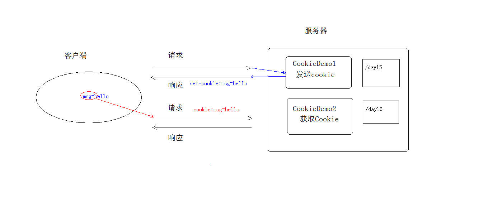
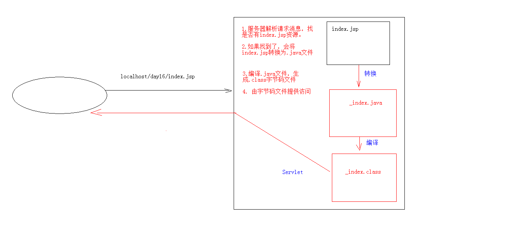
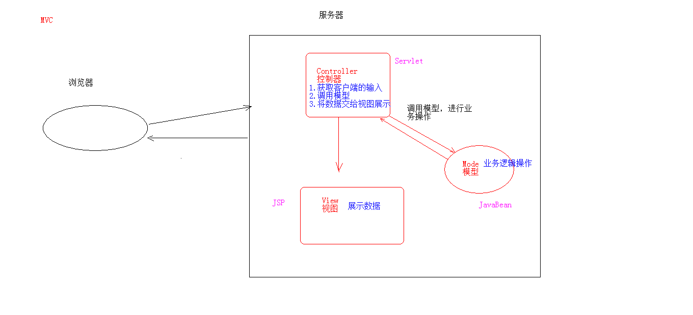

一、会话技术
- 会话：一次会话中包含多次请求和响应
- 一次会话：浏览器第一次给服务器资源发送请求，会建立会话，直到有一方断开为止
- 功能：在一次会话的范围内的多次请求间，共享数据
- 方式：
- 客户端会话技术：Cookie
- 服务器端会话技术：Session
二、Cookie
- 概念：客户端会话技术，将数据保存到客户端
- 使用步骤：
- 创建Cookie对象，绑定数据
- new Cookie(String name, String value)
- 发送Cookie对象
- response.addCookie(Cookie cookie);
- 获取Cookie，拿到数据
- Cookie[] request.getCookies()
- 实现原理：基于响应头set-cookie和请求头cookie实现
- cookie的细节处理
- 一次可以发送多个cookie，可以创建多个cookie对象，使用response调用多册addCookie方法发送cookie
- 如果不设置cookie的path，则名字相同的cookie会视为相同的cookie，后面的会覆盖前面的cookie，cookie是大小写敏感的
- cookie在浏览器中保存的时间
- 默认情况下，浏览器关闭后，cookie数据被销毁（cookie被保存在内存中）
- 持久化存储：
- setMaxAge(int seconds);
- 参数
- 正数：将Cookie数据写到硬盘的文件中，持久化存储，数值表示存储的时间
- 负数：默认值，存储在内存中
- 零：删除cookie信息
- cookie可以存中文，
- 在Tomcat8之前，cookie中不能直接存储中文数据，--需要将中文数据转码，一般采用URL编码
- 在Tomact8之后可以直接存储中文
- cookie获取的范围
- 默认情况下，在一个Tomcat服务器中部署的多个web项目之间不能共享cookie
- setPath(String path):设置cookie的获取范围，默认情况下，设置当前的虚拟目录（在servlet中设置path值的时候需要加上虚拟目录）
- 如果要共享，可以将path设置为"/"
- 不同的Tomcat服务器间cookie也可以进行共享
- setDomain(String path)：如果设置一级域名相同，那么多个服务器之间的cookie可以共享
- 例：setDomain(".baidu.com"),那么tieba.baidu.com和news.baidu.com中cookie可以共享
- cookie的特点和作用：
- cookie存储数据在客户端浏览器
- 浏览器对于单个cookie的大小有限制，以及对同一个域名下的总cookie数量也有限制（20个以内）
- 作用：
- cookie一般用于存储少量的不太敏感的数据
- 在不登录的情况下，完成服务器对客户端身份的识别
- 注意：
- cookie中URL编码：date_state = URLEncoder.encode(date_state,"utf-8");
- 解码：value = URLDecoder.decode(date_state,"utf-8");
三、JSP
- 概念：Java Server Page：Java服务器端页面
- 一个特殊的页面，其中既可以指定定义html标签，又可以定义java代码
- 原理：
- jsp本质上就是一个servlet：public final class index_jsp extends org.apache.jasper.runtime.HttpJspBase
- JSP的脚本：JSP定义Java代码的方式
- <% 代码 %>：定义的Java代码，在service方法中。service方法中可以定义什么，该脚本就可以定义什么
- <%! 代码 %>：定义的Java代码在jsp转换后的Java类的成员位置
- <%= 代码 %>：定义的Java代码，会输出到页面上。输出语句中可以定义什么，该脚本就可以定义什么
- JSP的内置对象
- 在jsp页面中不需要获取和创建，可以直接使用的对象
- jsp一共有9个内置对象
- request
- response
- out:字符数出流对象，可以将数据输出到页面上，和response.getWriter()类似
- response.getWriter()和out.write()的区别：response.getWriter()无论在哪个位置都会先与out.write()输出
- 在Tomact服务区真正给客户端做出响应之前，会先找response缓冲区数据，再找out缓冲区数据
- response.getWriter()数据输出一般在out.write()之前
- 指令：
- 作用：用于配置JSP页面，导入资源文件
- 格式：
- <%@ page contentType="text/html;charset=UTF-8" language="java" %>
- 分类：
- page：配置JSP页面的
- contentType:等同于response.setContentType()
- 设置响应体的mime类型以及字符集
- 设置当前jsp页面的编码（只能是高级开发工具IDE才能生效，如果是低级工具，需要使用pageEncoding设置字符集）
- import：用来导包
- errorPage：当前页面发生异常后，会自动跳转到指定的错误页面
- isErrorPage：标识当前页面是否是错误页面（标识之后，可以使用exception对象）
- true：是，可以使用内置对象exception
- false：否，默认值，不可以使用内置对象exception
- include：页面包含的，导入页面的资源文件
- <%@ include file="home.jsp"%>
- taglib：导入资源
- <%@ taglib prefix="标签前缀" uri="标签库的位置" %>
- 注释：
- HTML注释：
- <!-- -->:只能注释HTML代码片段
- jsp注释
- <%-- --%>:可以注释所有
- 内置对象：
- 在jsp页面中不需要创建，直接使用的对象
- pageContext
- request
- session
- application
- response
- page
- out
- config
- exception
内置对象 | |||
域对象 | 对象名 | 真实类型 | 作用范围 |
pageContext | PageContext | 当前页面共享数据，还可以获取其他八个内置对象 | |
request | HttpServletRequest | 一次请求访问的多个资源（转发） | |
session | HttpSession | 一次会话的多个请求间 | |
application | ServletContext | 所有用户共享数据 | |
response | HttpServletResponse | 响应对象 | |
page | Object | 当前页面（Servlet）的对象this | |
out | JspWriter | 输出对象，数据输出到页面上 | |
config | ServletConfig | Servlet的配置对象 | |
exception | Throwable | 异常对象 | |
注：servlet中不定义成员方法，建议不定义成员变量（会造成线程安全问题）
jsp第一次被访问时会被web容器翻译成servlet
四、session
- 概念：服务器端会话技术，在一次会话的多次请求间共享数据，将数据保存在服务器端的对象中。HttpSession、 存在服务器的一种用来存放用户数据的类HashTable结构。
- 快速入门：
- 获取HttpSession对象：
- HttpSession session = request.getSession();
- 使用HttpSession对象：
- Object getAttribute();
- 如果第一次访问，session对象不存在，就会创建一个并返回，如果有session对象则直接返回
- void setAttribute(String name, Object value)
- void removeAttribute(String name)
- 原理：Session的实现是依赖于Cookie的

- 3C1827C16A7616BF2B6F85CA17EE1B63、3C1827C16A7616BF2B6F85CA17EE1B63
- 细节：
- 当客户端关闭后，服务器不关闭，
- 两次获取的session默认不是同一个
- 如果需要相同的session，则可以创建Cookie，键为JSESSIONID，设置最大存活时间，让cookie持久化保存
- 客户端不关闭，服务器关闭之后
- session对象不是同一个，但是要确保数据不丢失
- session的钝化：
- 在服务器正常关闭之前，将session对象序列化到硬盘上
- session的活化：
- 在服务器启动后，将session文件转化为内存中的session对象即可
- session失效时间
- 服务器关闭
- session对象调用自杀方法：invalidate()
- 浏览器如果一直打开，session默认失效时间30分钟
- session的特点：
- session用于存储一次会话的多次请求的数据，保存在服务器端
- session可以存储任意类型，任意大小的数据
- session与cookie对比
- session存储数据在服务器端，cookie在客户端
- session没有数据大小限制，cookie有
- session数据安全，cookie相对于不安全
- session作为域对象：
- request：一次请求
- session：一次会话（包含了多次请求）
- ServletContext：整个web项目
- 域对象的作用范围的大小：request < session < servletContext
- 域：有一定作用范围的存储数据的对象
- 域对象：有一定作用范围的存储数据的对象
五、MVC开发模式
- MVC:
- M:Model，模型
- 完成具体的业务操作，如：查询数据库，封装对象
- V:View，视图
- 展示数据
- C:Controller，控制器
- 获取用户的输入
- 调用模型
- 将数据交给视图进行展示
- 图解原理
- 优缺点：
- 优点：
- 耦合性低，方便维护，可以利于分工协作
- 重用性高
- 缺点：使得项目架构变得复杂，对开发人员要求高
六、EL表达式
- 概念：Expression Language 表达式语言
- 作用：替换和简化jsp页面中代码的编写
- 语法：${表达式}
- 注意：
- jsp默认支持el表达式，如果要忽略el表达式
- 设置jsp中page指令中： isELIgnored="true"忽略当前jsp页面中所有的el表达式
- \${表达式}：忽略当前这个el表达式
- 使用：
- 运算
- 运算符
- 算数运算符
- 比较运算符
- 逻辑运算符：and or not
- 空运算符：empty（用于判断字符串，集合，数组对象是否为null或者长度是否为0）
- ${empty list}
- ${not empty requestScope.str}
- 获取值
- el表达式只能从域对象中获取值
- 语法：
- ${域名城.键名}:从指定域中获取指定键的值
- 域名称：
- pageScope---------->pageContext
- requestScope------->request
- sessionScope-------->session
- applicationScope---->application(ServletContexte)
- 例：在request域中存储了name=张三---------${requestScope.name}
- ${键名}：表示依次从最小的域中查找是否有该键对应的值，直到找到为止
- 获取对象、List集合、Map集合的值
- 对象：${域名称.键名.属性名}
- 成员变量：定义在成员呢位置的变量
- 属性：通过对象的属性来获取：setter或getter 方法，去掉set或get，在剩余的部分，首字母变小写
- List集合：${域名称.键名[索引]}
- ${requestScope.list[0]}<br>
- ${requestScope.list[3].birthday}
- Map集合：
- ${域名称.键名.key名称}
- ${域名称.键名["key名称"]}
- 隐式对象
- el表达式中有11个隐式对象
- pageContext:
- 获取jsp其他8个内置对象
- ${pageContext.request.contextPath}（获取虚拟目录）
七、JSTL
- 概念：JavaServert Pages Tag Library JSP标准标签库
- 是由Apache阻止提供的开源的免费的jsp标签
- 作用：用于简化和替换jsp页面上的java代码
- 使用步骤：
- 导入jstl相关jar包
- 引入标签库：taglib指令：<%@ taglib %>
- 使用标签
- 常用的JSTL标签
- if: 相当于java代码的if语句
- 属性：
- test必须属性，接收boolean表达式
- 如果表达式为true，则显示if标签体内容，如果为false，则不显示标签体内容
- 一般情况下，test属性值会结合el表达式一起使用
- 注意：c:if标签没有else情况，想要else情况，则可以再定义一个c:if标签
<c:if test="true">
<h1>what is this?</h1>
</c:if>
- choose：相当于java代码的switch语句
- 使用choose标签取出数字，相当于switch声明
- 使用when标签做数字判断，相当于case
- otherwise标签做其他情况的声明，相当于default
<c:choose>
<c:when test="${requestScope.number == 1}">星期一</c:when>
<c:when test="${requestScope.number == 2}">星期二</c:when>
<c:when test="${requestScope.number == 3}">星期三</c:when>
<c:when test="${requestScope.number == 4}">星期四</c:when>
<c:when test="${requestScope.number == 5}">星期五</c:when>
<c:when test="${requestScope.number == 6}">星期六</c:when>
<c:when test="${requestScope.number == 7}">星期日</c:when>
<c:otherwise>输入有误......</c:otherwise>
</c:choose>
- foreach：相当于java代码的for语句
- 完成重复操作
- 属性：
- begin：开始值
- end：结束值
- var：临时变量
- step：步长
- varStatus：循环状态
- index：容器中元素的索引，从0开始
- count：循环次数从1开始
<c:forEach begin="0" end="10" var="i" step="1" varStatus="s">
${i}========${s.index}============${s.count}
</c:forEach>
- 遍历容器
- 属性：
- items：容器对象
- var：容器中元素的临时变量
<c:forEach items="${requestScope.list}" var="item">
${item}
</c:forEach>
八、三层架构：软件设计架构
- 界面层（表示层）：用户看的界面，用户可以通过界面上的组件和服务器进行交互
- 业务逻辑层：处理业务逻辑的。
- 数据访问层：操作数据存储文件。
- 图解原理：

- 列表查询分析

- 目录：
- dao:model层，从数据库中查询数据，将数据分装到user对象集合中，并返回该对象集合
- web:定义servlet文件，将查询到的数据发送到前端jsp页面中使用
- service:controller层，用于将model层得到的数据进行一些逻辑操作
- dmain:定义对象，用于封装数据
- util:已经封装完成的工具包